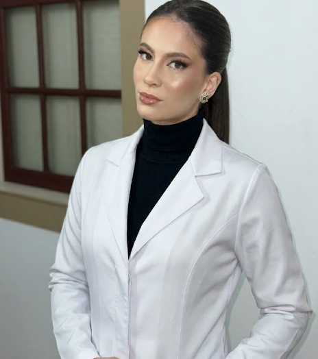

NOSSA HISTÓRIA E VALORES
Um clínica pensada para cuidar de cada detalhe
A ML Odontologia concentra diversas especialidades em um único espaço, tornando o atendimento mais prático e o diagnóstico mais preciso.

Sobre a clínica
Com uma trajetória consolidada na odontologia, a clínica é conduzida pela Dra. Maria Luiza, formada pela PUC Minas e com pós-graduação pela USP de Bauru. Ao longo dos anos, a busca por atualização constante levou à incorporação de tecnologias digitais, melhorando o planejamento e a previsibilidade dos tratamentos. Hoje, a clínica une experiência clínica, equipe multidisciplinar e recursos de radiologia digital para atender pacientes de todas as idades.
Nossos Valores
Os pilares que guiam nosso trabalho diário.
Humanização
Atendimento próximo e respeitoso, com atenção às necessidades de cada paciente.
Qualidade
Cuidado técnico em cada procedimento, buscando segurança e bons resultados.
Tecnologia
Uso de recursos modernos para auxiliar no diagnóstico e no planejamento dos tratamentos.
Confiança
Relação construída com transparência, clareza e acompanhamento em todas as etapas.
Nossa Trajetória
Formação em Odontologia pela PUC Minas.
Início dos atendimentos clínicos, com foco em cuidado próximo e acompanhamento contínuo dos pacientes.
Ampliação da atuação com apoio de profissionais de diferentes especialidades.
Inauguração da RD Radiologia, empresa independente, sob a mesma direção da clínica, localizada ao lado para maior praticidade nos exames.
Missão & Visão
Nossa Missão
Oferecer atendimento odontológico completo, com apoio de tecnologia e radiologia digital, garantindo diagnósticos precisos e tratamentos seguros.
Nossa Visão
Ser referência na região pela qualidade dos atendimentos, estrutura moderna e confiança dos pacientes.